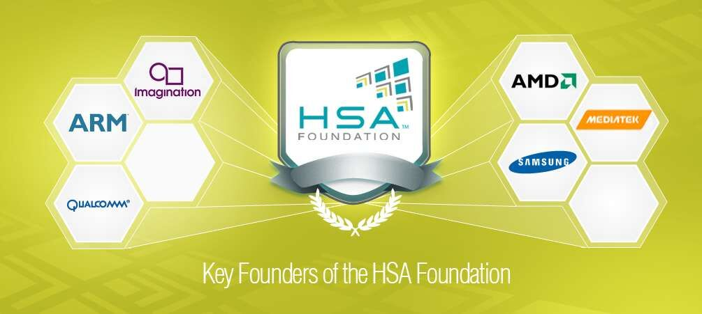

传统的同构多核处理器芯片架构逐渐逼近物理极限，芯片性能难以持续提升，且带来功耗过高、面积过大等问题，异构计算，或称之为“大计算”，开始成为国际主流技术。基于异构计算技术，异构多核处理器把CPU、GPU、DSP、FPGA、ASIC和其他固定加速器等深度集成在同一芯片上，协同运算、存储与管理，在性能、功耗等主要指标上，比现有的同构多核处理器有数倍甚至数十倍的提高，换言之，“CPU+”时代已经悄然来临。
在“CPU+”时代，除了技术方面的创新之外，还面临完善相关生态系统、整合上下游产业链以及开拓新市场等重大问题，必须全球产业界通力合作。
HSA（全球异构系统架构）协会是全球下一代异构多核处理器最重要的国际组织之一，汇集大批在全球具有重大影响力的处理器相关软硬件企业，共同致力于建设和完善HSA生态系统。
HSA（全球异构系统架构）2016年峰会，拟定于8月22、23日在北京经开区由HSA协会与中国半导体行业协会联合举办，这也是HSA峰会首次在中国举办。峰会将深入探讨进入“CPU+”时代后的芯片及其行业应用解决方案，以及如何发展下一代异构多核处理器等相关事宜。
本次活动拟邀请网信办、工信部、北京市领导出席，除HSA核心成员单位之外，华为、中科院、北大等国内处理器设计公司、科研院所、IP及工具供应商、软件及操作系统厂商、应用厂商等都将参与。
异构多核处理器的软件编程门槛大大降低，完全实现了基于不同类型处理器内核与加速电路单元的统一编程，统一调试和统一优化。
中国工程院首批院士之一，2011年和2015年分别获得中国中文信息学会和中国计算机学会终身成就奖。长期致力于发展自主可控的信息核心技术和产业，在制定国产软硬件系统的政策及标准等方面极具行业影响力。
周宏仁研究员，博士生导师，原联合国经济和社会事务部高级顾问。现任国家信息化专家咨询委员会常务副主任，负责主持国家经济信息系统的建设和管理。
John Glossner博士是HSA（全球异构系统架构）协会主席和通用处理器技术有限公司首席执行官，该公司是隶属于中国无锡德思普技术有限公司的美国分部。在加盟无锡德思普之前，Glossner博士是Sandbridge Technologies的联合创始人，并担任执行副总裁兼首席技术官。在此前，他主要管理负责IBM和朗讯/摩托罗拉StarCore在数字信号处理和宽带通信方面的技术和业务活动。他现任丹尼尔·韦伯斯特大学的副教授，并主管计算机科学系。Glossner博士于荷兰代尔夫特理工大学获得电子工程博士学位，在National Technological University取得电子工程硕士学位和工程管理硕士学位，并持宾夕法尼亚州立大学的电子工程学士学位。Glossner博士拥有超过120篇出版物和36项专利。
Greg Stoner是AMD Radeon Technology Group的Radeon开放计算计划高级总监，OpenACC Group董事，HSA协会董事会主席和常务董事，以及OpenMP架构评审委员会常任成员。Stoner先生负责AMD的GPU计算战略和路线图，领导Radeon开放计算工程团队。他在计算行业有很强的专业背景，在硬件和应用开发方面有超过20年的经验。Stoner先生之前是英特尔视觉计算软件组的业务发展总监，并曾在摩托罗拉，Ageia，Digital Domain，Metrowerks（隶属摩托罗拉），MIPS科技公司供职。Stoner先生之前在斯坦福大学进行商务进修，并在密歇根大学获得材料科学与工程学士学位。
Roy Ju是联发科的一名高级技术总监和SW架构师，致力于推动联发科移动平台的异构计算和编译器优化解决方案，参与了公司软件和其他技术创新等战略决策。他作为HSA协会专家主管多厂商（multivendor）工作组。Dr.Ju已经拥有了超过20年的技术和产品开发经验，涉及到编程系统，编译器优化，并行处理和处理器架构等领域，并在AMD，谷歌，英特尔，惠普和IBM公司担任过各种技术和管理职位。在2013年加入联发科之前，Dr. Ju是AMD的一位高级研究员，全球异构系统架构（HSA）项目的编译器架构师。Dr. Ju于1999年至2005年在英特尔工作期间，领导一个与中科院计算所联合开发的安腾开源编译器项目，该项目已经发布给全球开源研究组织。Dr. Ju在国立台湾大学获得电子工程学士学位，并在德克萨斯州大学奥斯汀分校电子和计算机工程系获得硕士和博士学位。
James Liu现任Imagination Technologies的副总裁兼中国区总经理。刘先生为Imagination带来在中国电子设计行业的20多年丰富经验。2015年加盟Imagination前，刘先生在Cadence供职18年，离开前作为中国区经理管理跨多个站点的700名员工 - 同时作为中国区的全球现场运营副总裁，领导一个100人左右的组织。在Cadence期间，他曾担任过许多重要的面向客户的职务，包括FAE，产品专员，销售经理，区域经理以及中国区销售总监。在加入Cadence前，刘先生曾在一家政府机构任职研发工程师/项目经理7年。刘先生拥有电子工程硕士学位和一个EMBA学位。

HSA概述
HSA（全球异构系统架构）协会是一个非盈利组织，包括系统芯片IP供应商，原始设备制造商，学术界，系统芯片厂商，操作系统供应商和独立软件供应商等，其目标致力于使并行计算编程更加容易和普遍。HSA协会成员目前正在建设一个异构计算的生态系统，根植于行业标准，结合CPU标量处理和包括GPU、DSP和其他加速器在内的内核并行处理，以低功耗实现高带宽内存访问和高应用性能。HSA定义了运用CPU、GPU、DSP、FPGA以及其它可编程和固定功能设备的并行计算接口，支持多样化的高级编程语言，从而创建通用计算的下一代基础。
HSA异构计算
基于异构计算技术，异构多核处理器把CPU、GPU、DSP、FPGA和ASIC等不种类型的处理器内核和加速电路深度集成在同一颗芯片上，按照一致性的软硬件接口标准与规范进行协同运算、协同存储与协同管理。
HSA异构计算的目标
与现有同构多核处理器和同类型SoC芯片相比，异构多核处理器在性能、功耗等主要技术指标上都实现了数倍乃至数十倍的显著改进。
HSA会员